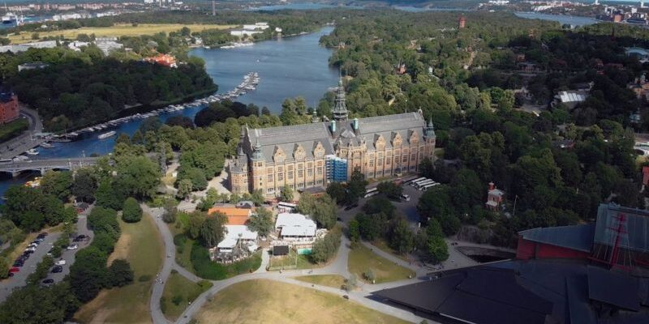
Швеція — детальна інформація про країну з фото. Пам’ятки, міста Швеції, клімат, географія,
населення і
культура.
Зміст
- Швеція (Королівство Швеція)
- Корисна інформація про Швецію
- Географія і природа
- Клімат
- Найкращий час для відвідування
- Історія та цікаві факти
- Адміністративний поділ
- Населення
- Транспорт
- Міста Швеції та популярні напрямки
- Пам’ятки Швеції
- Проживання
- Кухня
Швеція (Королівство Швеція)
Швеція (швед. Sverige) — найбільша держава Північної Європи, розташована на Скандинавському
півострові.
Омивається водами Балтійського моря і межує з іншими скандинавськими країнами — Норвегія і Фінляндія.
Швеція — конституційна монархія, член Європейського союзу та учасник Шенгенської угоди. Є однією з
найбагатших країн у світі з приголомшливою природою і багатою історією.
Швеція — це країна безкрайніх лісів і величних озер, численних островів уздовж Балтійського
узбережжя і
затишних міст. Це держава з самобутньою історією від легендарних вікінгів до однієї з найсильніших держав
Європи. До 17 століття Швеція була сильним королівством, а розміри держави були в 3 рази більше нинішніх.
Тим дивніше, що країна не брала участь у військових конфліктах з 1815 року (як і Швейцарія) і досі цурається
будь-яких військових союзів. Шведи були язичниками до 11 століття. Зараз більшість жителів Швеції є
протестантами.
Корисна інформація про Швецію
- Населення — понад 10 млн осіб.
- Площа – 447 435 км².
- Мова — шведська.
- Валюта — шведська крона.
- Час – UTC +1, влітку +2.
- Ліси займають 63% території, озера і річки – 9%, болота – 8%.
- Швеція — світська держава. Близько 70 % населення сповідує християнство (протестанти).
- Популярні сувеніри: кінь Дала, скло і кришталь, товари для дому і предмети інтер’єру. Також Швеція
славиться своїми меблями в стилі мінімалізм.
- Прапор Швеції — являє собою прямокутне полотнище синього кольору зі скандинавським хрестом жовтого
кольору і ставленням ширини прапора до його довжини 5:8.
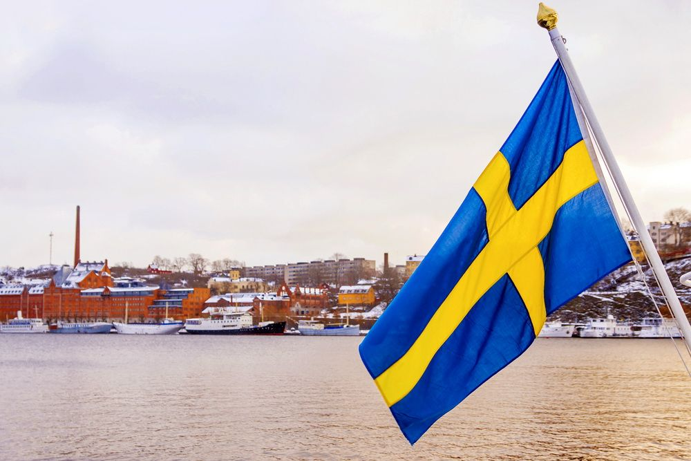
Географія і природа
Швеція займає східну і південну частину Скандинавського півострова та омивається Балтійським морем.
Найбільшими островами шведської Балтики є Готланд і Еланд. Рельєф країни переважно горбистий. На півночі
вздовж кордону з Норвегією тягнуться Скандинавські гори. Тут знаходиться найвища точка Швеції — гора
Кебнекайсе (2126 м). Південна частина країна — рівнинна.
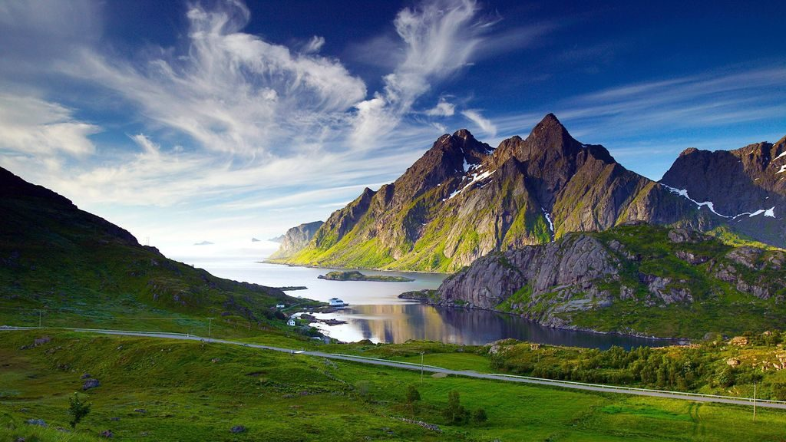
Завдяки географічним особливостям і досить великої протяжності Швеція має досить різноманітні природні
ландшафти. На півночі — це тундра і тайгові ліси, південніше — змішані, на крайньому півдні — широколисті.
Ліси займають понад 60 % території країни. Швеція має досить багату фауну: лосі, козулі, лисиці, зайці,
вовки, ведмеді, кабани, рисі, росомахи.
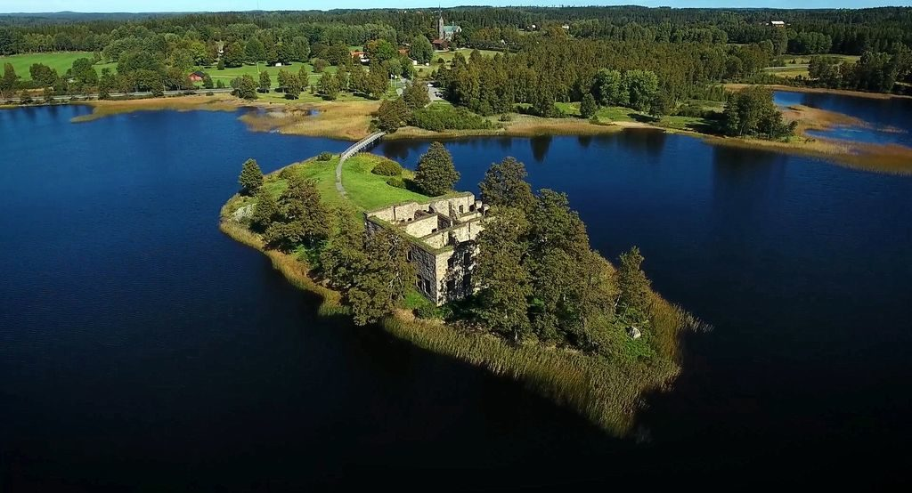
Територія Швеції багата озерами. Найбільші з них — Венерн і Веттерн. Більшість річок впадають в Балтійське
море. Найбільші річки — Каликсельвен, Шеллефтельвен, Умельвен і Турнельвен. В морі мешкають тріска,
скумбрія, оселедець, в озерах і річках — лосось, форель, окунь, харіус.
Клімат
На більшій частині території Швеції клімат помірний завдяки впливу теплого Гольфстріму і рельєфу. Літо
досить тепле, а зима прохолодна з невеликими морозами. На півдні середня температура зими близько 0 °C. На
півночі країни клімат більш холодний — субарктичний, з холодною зимою і прохолодним літом.
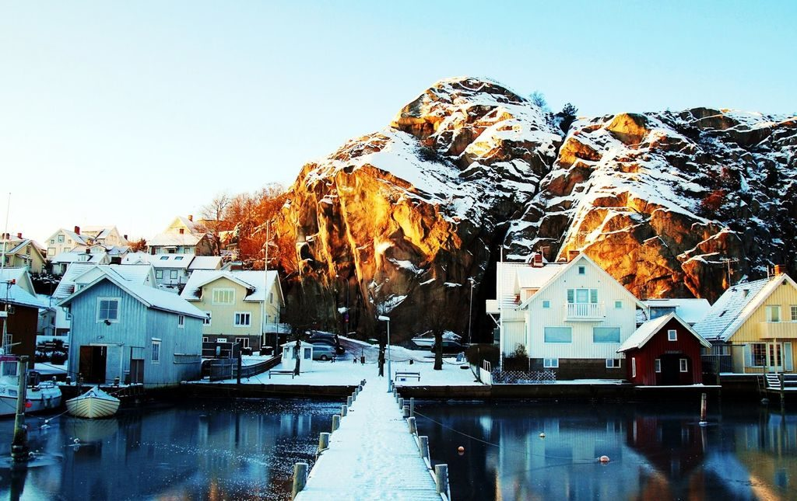
Найкращий час для відвідування
Кращим часом для відвідування Швеції буде період з травня по вересень. У міжсезоння може бути прохолодно і
дощитиме. Дуже красиво у Швеції взимку, особливо в різдвяний період.Кращим часом для відвідування Швеції
буде період з травня по вересень. У міжсезоння може бути прохолодно і дощитиме. Дуже красиво у Швеції
взимку, особливо в різдвяний період.
Історія та цікав факти
У третьому тисячолітті до н. е. територія Швеції була заселена германцями. У раннє Середньовіччя панували
племена гетів і свеїв. Цей період в історії Швеції називається Венделській. Племена були розділені на дрібні
князівства, керовані конунгами. До 8 століття Швеція була об’єднана упсальським конунгом Ингьяльдом
Підступним. Починається епоха вікінгів. Вікінги стають потужною силою. Вони займаються мореплаванням,
торгівлею, багато воюють. Вікінги були язичниками та зробили великий вплив на всю Північну Європу. Їх епоха
закінчилася, коли був спалений “двір богів” в Упсалі та на території Швеції почало проникати християнство.
У 11 столітті верховна влада переходить між пологами конунгів Стенкіля, Сверкера та Еріка. У 1250 році на
зміну
виборній владі приходить династія Фолькунгів. В цей період відбувається зміцнення дворянства. Останній
період
середньовічної Швеції має назву епоха Кальмарської унії. Згідно з цим документом король обирався спільно
представниками родів. Але по факту на цей процес чинили великий вплив данці. У цей період на тлі боротьби з
данським впливом зароджується національна самосвідомість, а сама Швеція все більше об’єднується.
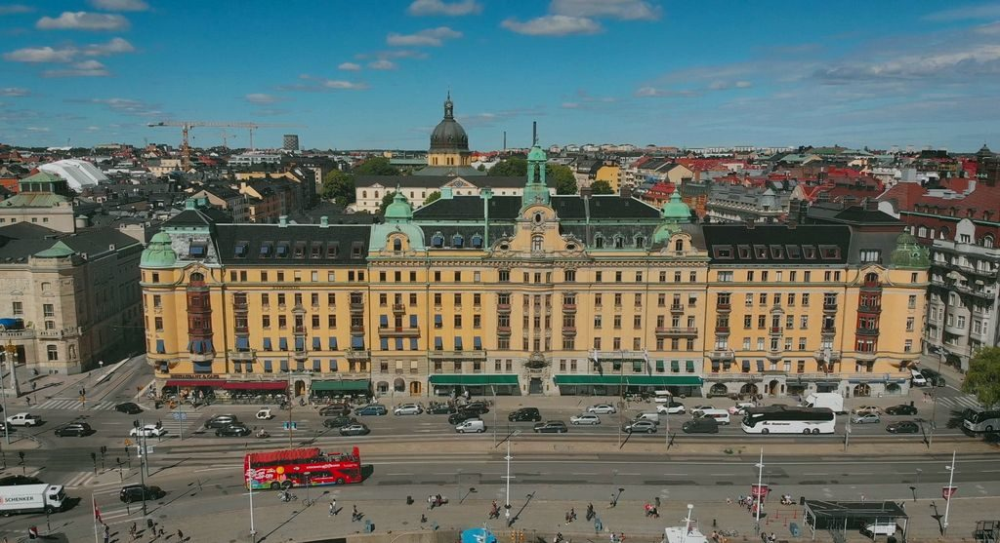
У 1523 році королем Швеції був проголошений Густав Васа. При ньому була розірвана Кальмарська унія, монархія
стає спадковою, відбувається піднесення селянства і розквіт лицарства. Після смерті Васи виникло кілька
переворотів, поки до влади не прийшов Карл IX. При його правлінні у Швеції перемогла Реформація, а сама
країна стала на шлях завоювань. До 17 століття Швеція стає імперією і набуває землі Польщі, Норвегії,
Німеччини. За підсумками Північної війни з Росією країна втратила безліч земель, позбулася статусу імперії
та стала другорядною державою.
У 18 столітті та на початку 19 століття Швеція намагалася повернути собі статус однієї з наймогутніших
держав
Європи, але поразка від Росії в 1743 році поставила на шведських амбіції хрест. Настає епоха правління
риксдагу, яку називають “ерою свобод”. У цей період у Швеції розвивається наука і культура. В результаті
наполеонівських воєн Данія віддала шведській державі Норвегію. Була укладена Шведсько-норвезька унія, яка
діяла
до 1905 року.
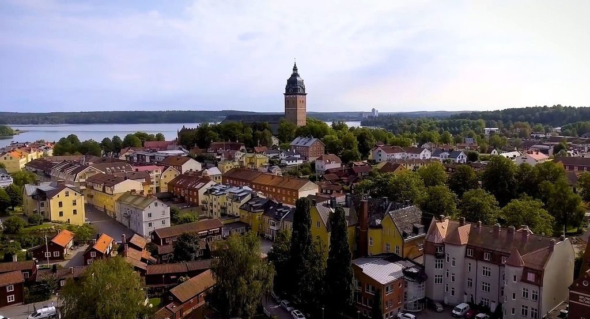
У 1809 році у Швеції була прийнята нова конституція, яка заклала основи парламентської монархії. У 19
столітті починається індустріалізація, яка сприяла зростанню економіки та чисельності населення. Під час
Другої світової війни (попри оголошений нейтралітет) Швеція співпрацювала з фашистською Німеччиною.
Адміністративний поділ
Швеція поділяється на 21 льон, які, своєю чергою, діляться на комуни. Леном управляє губернатор і
регіональна дума.
В регіональному плані Швецію можна розділити на наступні регіони:
- Норрланд — малонаселена північна частина країни, що включає дев’ять ленів. Тут багато дикої природи з
лісами, озерами, річками, болотами та високими горами, які тягнуться вздовж кордону з Норвегією.
- Свеланд — центральна частина країни з містами Стокгольм і Уппсала.
- Геталанд — південь Швеції з містами Гетеборг і Мальме.
Населення
Велика частина населення Швеції — етнічні шведи. Вони говорять шведською мовою і є протестантами. При
цьому 90% населення так чи інакше володіє англійською. Великі діаспори: фіни, саами. Швеція — країна з
високою урбанізацією. У містах живе 85% населення. Попри дружність і спокій шведи досить замкнуті та
відокремлені. Хоча це не означає, що вони байдужі та не прийдуть на допомогу.
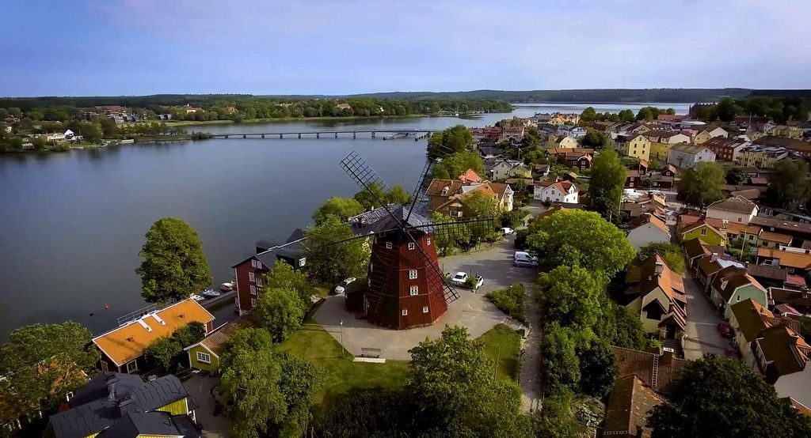
Транспорт
Найбільші аеропорти Швеції розташовані в Стокгольмі, Гетеборзі та Мальме. Поїздом в цю скандинавську
країну можна дістатися з Норвегії, Фінляндії, Данії та Німеччини. Поромне сполучення є з Польщею,
країнами Прибалтики, Німеччиною, Росією і Бельгія.
Міста Швеції та популярні напрямки
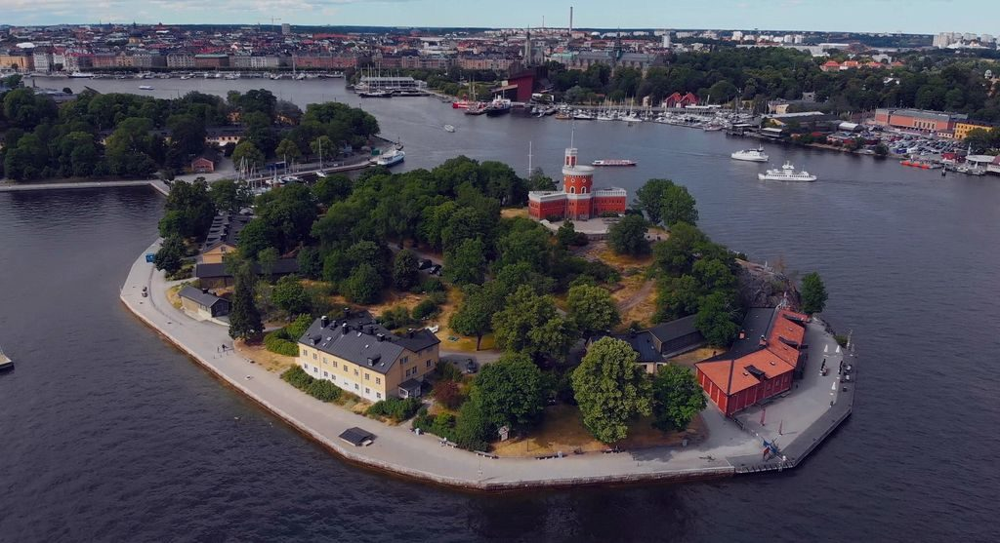
Стокгольм — столиця і найбільше місто Швеції з чарівним старим містом Гамла Стан. Стокгольм розташований
на архіпелазі з 14 островів, з’єднаних десятками мостів. Це гарне місто з різноманітною архітектурою,
цікавими пам’ятками, насиченим культурним і нічним життям.
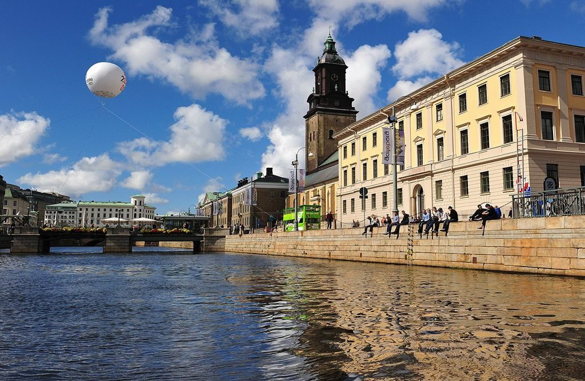
Гетеборг — друге за чисельністю населення місто Швеції, великий промисловий центр і порт. Був заснований
в 1621 році в період розквіту Шведської імперії та довгий час був оплотом шведського флоту. Гетеборг
відомий своєю космополітичною атмосферою і найбільшим в країні університетом.
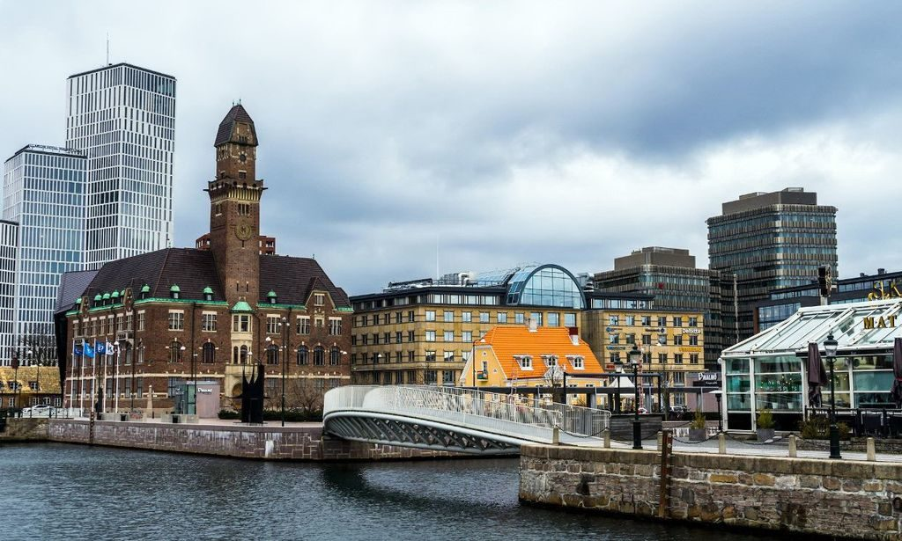
Мальме — третє за величиною місто Швеції, розташоване на півдні країни. Це старовинне торгове місто з
ганзейським минулим, індустріальний центр і порт.
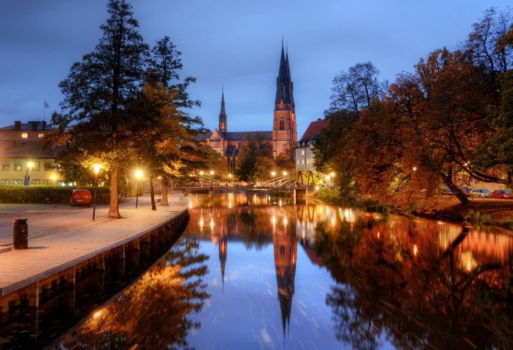
Уппсала — одне з найважливіших історичних міст Швеції, розташоване в 80 км на північ від Стокгольма.
Відомий найбільшим собором в Скандинавії та двома великими університетами.
Проживання
Швеція — одна з найдорожчих країн для проживання. Номер в готелі легко може обійтися в 1000 шведських
крон. Щоб заощадити можна зупинитися в кемпінгу або котеджі. Популярна мережа хостелів – Svenska
Turistföreningen.
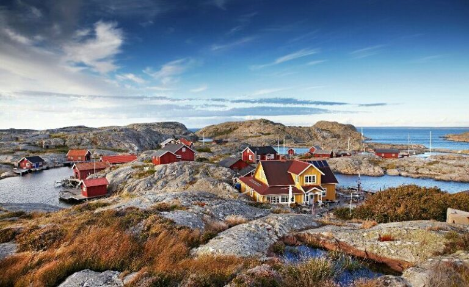
Кухня
Кухня Швеції багата рибою і м’ясом. Як гарнір найчастіше виступає картопля. Одним з найвідоміших і
дивних страв шведської (і скандинавської) кухні є surströmming (ферментований оселедець). Інша
популярна їжа:
- Pytt i panna – м’ясо з картоплею і цибулею.
- Tunnbrödrulle – традиційний шведський фастфуд.
- Smörgåstårta – листковий пиріг з лососем.
- Маринований оселедець.
- Kroppkakor – картопля, фарширована свининою.
- Десерти: Spettekaka, Rabarberkräm, Semla.
- Köttbullar – м’ясні фрикадельки з картоплею і вершковим соусом (напевно, найпопулярніше блюдо
будь-якої Ікеї).
- Artsoppa – гороховий суп зі свининою.
- Blodpudding – кров’яна ковбаса.
Державна мова, якою розмовляють лише кілька тисяч. Навіщо це Швейцарії?
Хоча ретороманська є однією з чотирьох офіційних мов країни, нею розмовляють менш ніж 0,5% швейцарців.
Романшська або ретороманська - одна з чотирьох державних мов Швейцарії. Але на запитання: "Ви говорите
романшською?" ствердно можуть відповісти лише 0,5% швейцарців.
Вона належить до групи романських мов і є рідною для мешканців найбільшого швейцарського кантону -
Граубюндена, що лежить на південному сході країни.
Минулого століття кількість носіїв ретороманської зменшилася на половину, і тепер нею розмовляють лише 60
тисяч людей.
Подорожуючи Граубюнденом, все ще можна побачити ретороманську на вуличних знаках або почути веселе "Allegra!"
(Ласкаво просимо!) у ресторанах.
Проте майже 40% корінних носіїв мови покинули свою малу батьківщину і в пошуках роботи переїхали до міст,
приміром, Цюриха. За межами кантону ретороманську не почути.
Але яка доля в такій маленькій країні може спіткати мову лише з кількома тисячами носіїв? Чи вдасться її
зберегти? Чи вимре вона, як колись динозаври та птах додо?